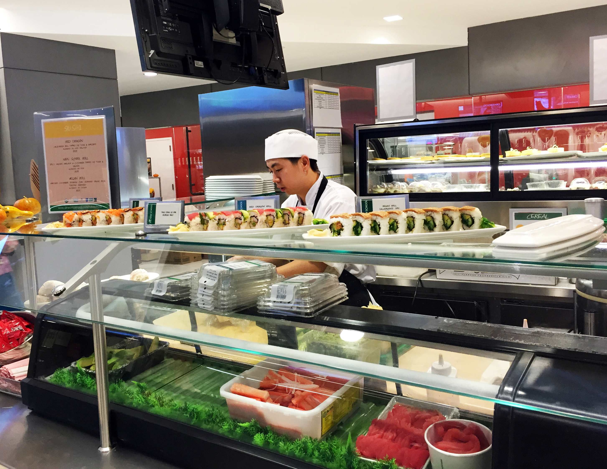

What We Talk About When We Talk About Sushi
Michele Berry & Ivy Meissner
Sushi is eaten around the world, cheaply and expensively. It can be found in mall food
courts in Illinois, train stations in Tokyo, on the beaches of California, on top of Columbus Circle
in Manhattan, and in the alley ways of Melbourne. At our own University Center cafeteria, where
students consume 300 to 500 rolls a day, sushi is one of the most popular items. But sushi is more
than a roll of raw fish and rice. Sushi is an entire world, wrapped into itself. And there is a lot you
don’t know about sushi.
This method of fish pickling spread in practice to southern China, until sometime around the 15th century the Japanese finally caught wind, and decided they wanted to eat the rice as well. In Japan sushi evolved from a method of preservation to a quick snack, often sold from street carts.
Sushi came to America by way of 1950’s California, where in a small section of L.A. known as Little Tokyo, the California Roll began gaining in popularity.
Sushi in America remained a California craze for only a short time. In the 1960’s Japan’s economy was thriving, and wealthy Japanese businessmen were travelling to L.A. and frequenting the myriad of sushi restaurants that were popping up. By 1980’s Americans had grown in their sushi consumption and were eating more fish as a healthy alternative to red meat, and the restaurants began moving East. This increase in fish consumption also brought with it the rise of industrial fishing, bycatch, and the depletion of many of the most popular fish populations.
The booming Japanese economy meant that across the Pacific, they were eating a ton of sushi themselves, creating an import demand for tuna that rolled across the world and further spread the globalization of sushi. America became a huge exporter of tuna. The popularity of tuna, as well as the booming export trade, is one of the leading causes of the collapse of bluefin tuna population, and a reason many sustainability advocates eye the sushi world warily.
Just as the American tuna export industry took off in the 1990’s, the Japanese economy crashed. But by then, sushi had created a niche market for itself in North America, especially in its cities. The United States was riding the sushi wave.
Sushi did not come from Japan, but there is a reason we identify it as Japanese. The sushi we eat today, whether it is sashimi (raw) or in a roll (usually), is, at its best, prepared meticulously and fresh, in the clean and precise style that reflects the minimalist aesthetic of Japanese culture.
Theodore Bestor is a professor of anthropology and Japanese studies at Harvard and an author on many books and essays about the world of sushi and its globalization. In his essay “How Sushi Went Global”, he writes how firm the Japanese grip remains on the world of sushi, from the docks of New England where they instruct foreign fishermen on how to export tuna, to the restaurants themselves, where the perceived prestige of Japan drives restaurant owners to maintain a facade of Japanese culture.
There are sushi chefs across the world and around the United States who strive to maintain Japan’s perfection, even when the chefs preparing the sushi are from China, Mexico, and Detroit. There are chefs that serve only very traditionally, there are chefs that only serve raw, there are omakase chefs (basically a tasting menu, omakase literally means “I’ll leave it to you).
But there is also sushi that has been commodified far beyond the point of traditional preparation. There is the “fast food” sushi, of the ilk served in gas stations and Duane Reades. And even Tokyo cannot be left out of this departure from “tradition”, as the founders of conveyorbelt sushi, where customers sit at a bar and pick from sushi on plates on a moving conveyor belt in front of them. And while sushi is one of the biggest sellers at the University Center, not everyone is thrilled with how the sushi is prepared and presented. Aki Okoshi a Japanese student at Eugene Lang, shares these criticisms.
“I'm interested why the cafeteria adapted western style sushi, it's very different from my perspective I don't call that sushi, I would describe it as poorly imitated sushi"

So between tradition and appropriation, where does the University Center cafeteria fit in?
Fabio Parasecoli is the coordinator of Food Studies at the New School. He also eats at the University Center cafeteria about once a week.
“I don’t believe in the notion of authenticity, authenticity is constructed and contextual,” said Parasecoli. “Sushi in Japan is not a frozen tradition, it’s dynamic, it changes with time. I think the desire in the cafeteria is to reflect the cosmopolitanism both of the university and of New York. In a way, it would feel out of place if there was just one kind of food.
“It’s very important, especially for students. It is a way to explore other cultures and other traditions. And it’s also a very controlled and domesticated experience because first of all you’re having it in your cafeteria in New York, you’re not at Tsukiji in the middle of the night trying to fight for some fish.”


 A few blocks away from the
University Center, Sushi Nakazawa opened
on a quiet West Village street off of 7th
Avenue in August of 2014. The chef,
Daisuke Nakazawa, worked at the Tsukiji
fish market and was an apprentice for over
ten years to the renowned Jiro Ono, of Jiro
Dreams Of Sushi fame. To get a
reservation, one must be prepared to book
early, and even then it is nearly impossible
to get the date and time you want:
reservations open for 30 days in advance
every night at midnight, and fill up almost
immediately.
A few blocks away from the
University Center, Sushi Nakazawa opened
on a quiet West Village street off of 7th
Avenue in August of 2014. The chef,
Daisuke Nakazawa, worked at the Tsukiji
fish market and was an apprentice for over
ten years to the renowned Jiro Ono, of Jiro
Dreams Of Sushi fame. To get a
reservation, one must be prepared to book
early, and even then it is nearly impossible
to get the date and time you want:
reservations open for 30 days in advance
every night at midnight, and fill up almost
immediately.
The restaurant is minimally decorated in black and white, with lushly padded chairs and mirrors to make the narrow space seem larger. The only color comes from a large vase of flowers in the back window, and a Subway sandwich bag leftover from service director Doug Hopkin’s lunch on the sushi bar’s counter.
“Are you going to be taking pictures? I’ll need to change if you want to take pictures.” A few minutes later Hopkins has changed into a suit and tie and is sitting by the window in the back.
Sushi Nakazawa is an omakase restaurant. Diners come, sit, and are served twenty courses of sushi, prepared by the chef behind the bar. The fish is fresh, the service is impeccable, the wine list is extensive. The bar omakase at Sushi Nakazawa costs $150.
So how do you compare $150 sushi at a luxe West Village restaurant to a $7 California roll served in a cafeteria? Well, it turns out, you really can’t.
“You’re not doing anything wrong,” said Hopkins. “You’re talking about maki (rolls) and we serve nigiri (raw fish on rice). They’re two different styles. But still, you’re above where it started, with the street carts.”
“It’s very complicated because in many ways it is a form of cultural appropriation,” said Parasecoli. “But at the same time it’s a mediation between the experience of the student and different cultures.”
Giving students access to sushi serves as a gateway, and an accessible one at that. It allowing a peek into Japanese culture that may be small, and is probably often overlooked when a student is scarfing down a salmon roll in the hall between class. But perhaps it is serving the role that sushi was always meant to have. Whatever that may be.
Sources for the historical information on sushi came from “How Sushi Went Global” by Theodore C. Bestor, and from “The History of Sushi” by Naomichi Ishige